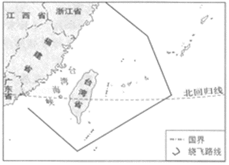
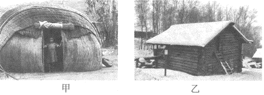
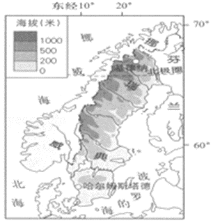

2018年北京市中考地理真题 · 选择题 第21、22、23、24、25题
毕业学校_____________ 姓名_____________ 准考证号_____________ ____________________________________________________
 硒砂瓜富含硒，个儿大汁儿甜，是宁夏中卫地区的特色农产品之一。如图为宁夏回族自治区简图。读图，完成20，21题。
硒砂瓜富含硒，个儿大汁儿甜，是宁夏中卫地区的特色农产品之一。如图为宁夏回族自治区简图。读图，完成20，21题。21.与泾源地区相比，中卫种植硒砂瓜的有利自然条件是（ ）
A.地势平坦B.降水更多C.科技水平高D.交通便利

2018年4月以来，我国空军连续多次出动战机绕飞祖国宝岛，丈量祖国大好河山，锤炼提升维护国家主权和领土完整的能力。如图为空军绕飞宝岛路线示意图。读图，完成22、23题。22.战机绕飞祖国宝岛，宣示台湾（ ）
A.是祖国神圣领土不可分割的一部分
B.是我国第一大岛
C.自然资源丰富
D.海域面积辽阔
23.战机绕飞路线（ ）
A.穿越台湾海峡B.横穿太平洋
C.均在我国境内D.穿过北回归线
传统民居是人类适应自然环境的智慧杰作。如图为两传统民居，其中甲在南非，乙在俄罗斯西伯利亚地区。读图，完成24、25题。

24.甲、乙两民居相比（ ）
A.甲为半球形，以木板为材料
B.乙以土石为材料，房顶坡度大
C.甲为半球形，容易拆卸运输
D.乙以竹子为材料，房顶坡度大
25.甲、乙两民居在设计上的特点及目的是（ ）
A.甲：无窗，门窄小，为抵御严寒
B.乙：配有梯子，在积雪掩门时便于出入
C.甲：简单轻便，防止被洪水冲走
D.乙：房屋低矮，防止干热空气进入室内

2018年4月，世乒赛在瑞典小城哈尔姆斯塔德举办，中国乒团又一次包揽全部冠军奖杯。如图为瑞典地形简图。读图，完成26﹣29题。